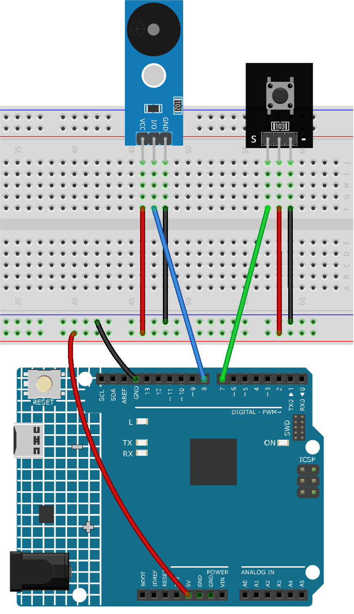

Bemerkung
Hallo und willkommen in der SunFounder Raspberry Pi & Arduino & ESP32 Enthusiasten-Gemeinschaft auf Facebook! Tauchen Sie tiefer ein in die Welt von Raspberry Pi, Arduino und ESP32 mit anderen Enthusiasten.
Warum beitreten?
Expertenunterstützung: Lösen Sie Nachverkaufsprobleme und technische Herausforderungen mit Hilfe unserer Gemeinschaft und unseres Teams.
Lernen & Teilen: Tauschen Sie Tipps und Anleitungen aus, um Ihre Fähigkeiten zu verbessern.
Exklusive Vorschauen: Erhalten Sie frühzeitigen Zugang zu neuen Produktankündigungen und exklusiven Einblicken.
Spezialrabatte: Genießen Sie exklusive Rabatte auf unsere neuesten Produkte.
Festliche Aktionen und Gewinnspiele: Nehmen Sie an Gewinnspielen und Feiertagsaktionen teil.
👉 Sind Sie bereit, mit uns zu erkunden und zu erschaffen? Klicken Sie auf [hier] und treten Sie heute bei!
Türklingel
Das Projekt „Türklingel“ zielt darauf ab, die Funktionalität einer echten Türklingel zu simulieren. Bei Betätigung eines Knopfes spielt der Arduino eine vordefinierte Melodie über ein passives Summermodul ab.
1. Schaltungsaufbau


2. Programmcode
Öffnen Sie die Datei
07-Doorbell.inoim Pfadultimate-sensor-kit\fun_project\07-Doorbell, oder kopieren Sie diesen Code in die Arduino IDE.
3. Code-Erläuterung
Die grundlegende Idee dieses Projekts ist die Verwendung eines Arduino Uno Boards zur Erfassung eines Knopfdrucks, der wiederum eine Melodie auf dem passiven Summer abspielt. Die Melodie besteht aus einer Abfolge von Noten (definiert durch ihre Tonhöhen) und deren Dauer.
Einbindung erforderlicher Bibliotheken und globale Variablen
#include "pitches.h" // This library provides the frequency values for musical notes. const int buttonPin = 7; // Button connected to digital pin 7 const int buzzerPin = 8; // Buzzer connected to digital pin 8 // Arrays to define the melody and the corresponding note durations int melody[] = {...}; int noteDurations[] = {...};
In diesem Abschnitt werden die für Musiknoten erforderliche Bibliothek eingebunden und die Pins für unsere Komponenten festgelegt. Zusätzlich werden die Melodie und ihre Dauern in Arrays definiert.
Initialisierung des Knopfs und Start der seriellen Kommunikation
void setup() { Serial.begin(9600); // Start serial communication at 9600 baud rate pinMode(buttonPin, INPUT); // Set the button pin as an input }
In der
setup()Funktion starten wir die serielle Kommunikation und konfigurieren den buttonPin als Eingang.Überwachung des Knopfdrucks zur Wiedergabe der Melodie
void loop() { int buttonState = digitalRead(buttonPin); // Read the state of the button if (buttonState == LOW) { // Check if the button is pressed Serial.println("Button pressed"); // Send a message to serial monitor buzzer(); // Play the buzzer melody } }
In dieser Schleife überprüfen wir kontinuierlich den Zustand des Knopfs. Bei Betätigung wird eine Nachricht an den seriellen Monitor gesendet und die Funktion
buzzer()aufgerufen, die die Melodie abspielt.Die Funktion
buzzer()zur Wiedergabe der Melodievoid buzzer() { int size = sizeof(noteDurations) / sizeof(int); // Calculate the number of notes for (int thisNote = 0; thisNote < size; thisNote++) { int noteDuration = 1000 / noteDurations[thisNote]; // Calculate note's play duration tone(buzzerPin, melody[thisNote], noteDuration); // Play the note on the buzzer int pauseBetweenNotes = noteDuration * 1.30; // Calculate pause between notes delay(pauseBetweenNotes); // Introduce the pause noTone(buzzerPin); // Stop playing the note } }
In der Funktion
buzzer()werden die Noten der Melodie nacheinander abgespielt. Dietone()Funktion erzeugt einen Ton auf dem Summer für eine festgelegte Dauer. Nach dem Abspielen jeder Note folgt eine kurze Pause, bevor die nächste Note abgespielt wird.